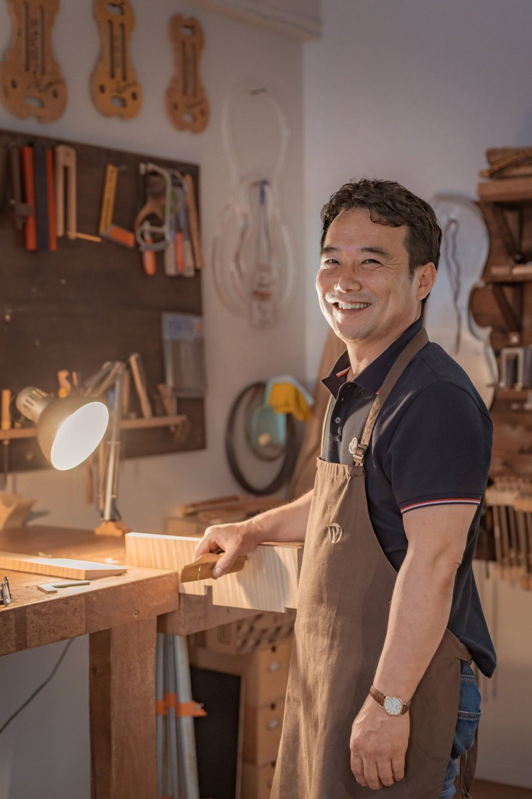

Photograph courtesy of the maker
Min Sung Kim
Born in Nonsan, Korea, in 1971, Min Sung Kim trained with Peter Paul Prier in Salt Lake City before moving to Cremona, where he graduated from the IPIALL school in 2003 under Primo Pistoni and Alessandro Voltini. His cellos have won a Bronze Medal at the 11th Cremona Triennale in 2006, Gold at Pisogne in 2008, Gold and Best Setup at the China International competition in Beijing in 2010, and Silver with Best Workmanship at Mittenwald the same year. He took Gold and Best Setup at the Wieniawski competition in Poznań in 2011 and an honourable mention for viola at the 15th Cremona Triennale in 2018, alongside several VSA Certificates of Merit. After many years in his own Cremona atelier near Piazza Risorgimento, he now works in Seoul.
Work